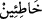

karar veren kimselerden “oldun.”
“
(günahkârlar)” kelimesi, erkekler öne çıkarılarak müzekker kılınmıştır.
Bir hadiste şöyle buyrulmuştur: “Her insan hatâ eder. Hatâ edenlerin en hayırlısı
tevbe edenlerdir.”[29]
Aziz, yumuşak huylu bir kimse olduğu için Züleyhâ’yı bu kadar ayıplamakla yetindi.
Nitekim Molla Câmî şöyle der:
Aziz bu sözü söyledi ve evden dışarı çıktı
Onun güzel ahlâkı zamanında destan olmuştu
Gönül tahammül etmek ister, fakat bu kadar değil
İyi huy güzeldir, fakat bu kadar değil
Kadının güzel huyu sebebiyle erkek onun yükünü çeker
Kadın güzel huyu fırsat bilip işi kötü yüzlülüğe çeker
Kadın ne yaparsa o kadar sabır gösterme
Yoksa kıskançlık seddine zarar gelir
Azizin karısını fazla kıskanmayan biri olduğu da söylenir.
Rivâyet edilir ki Aziz kırk gün Züleyhâ’nın yanına gitmeyeceğine yemin etti. Yûsuf’u
Züleyhâ’nın yanından çıkararak kendi hizmetleriyle meşgul etmeye başladı. Züleyhâ da
Yûsuf’u görememeye başladı.
(Züleyhâ:) Yazık o ava ki tuzağımdan kurtuldu,
Yazık o süzülmüş bala ki damağımdan gitti.
Bir örümcek bir gün çıktı gitti
Ki kendisi için rızık toplasın
Bir yerde bir doğanın oturduğunu gördü
Şahların elinde esir olmaktan kurtulmuş
Örümcek doğanın etrafını ağıyla örmeye başladı
Ki doğanın kanadını bağlasın da uçamasın
Bir müddet onun etrafına tellerini dokudu
Onu sarmak için elinden gelen oyunu oynadı
Doğan kendisini örümceğin tellerinden bir kenara atınca
Geriye birkaç parça telden başka bir şey kalmadı
İşte âh u figan edip incinen o örümcek benim
Kendi murâdımdan uzak düşmüş
Örümceğin ağı gibi benim de can damarım koparılmış
Ümit kuşu ona av olmadı
Her işten ve güçten tellerim kesilmiş
Elimde koparılmış tellerden başka bir şey yok.